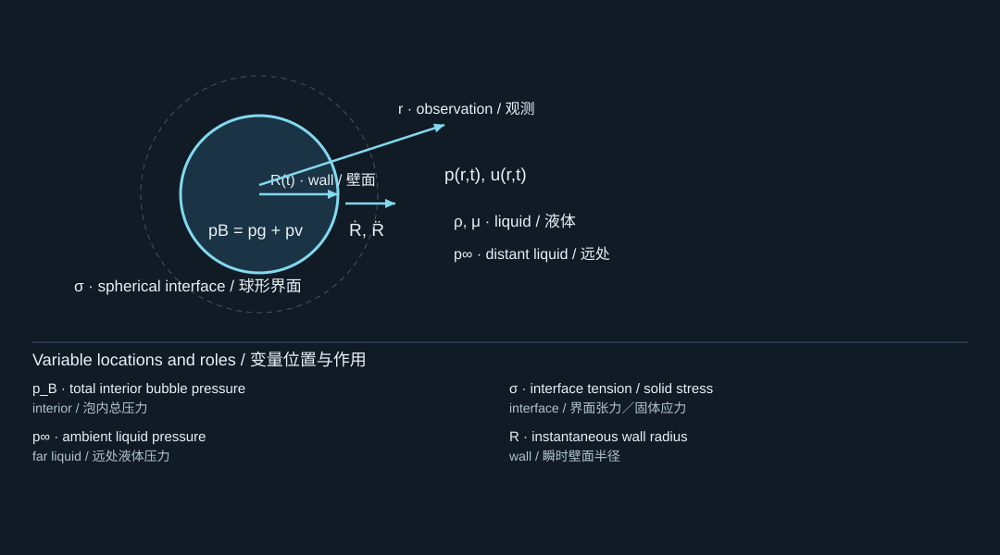
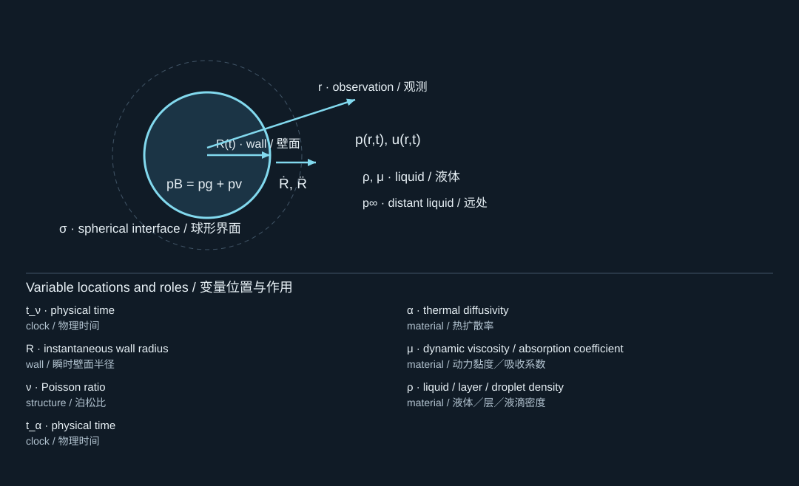
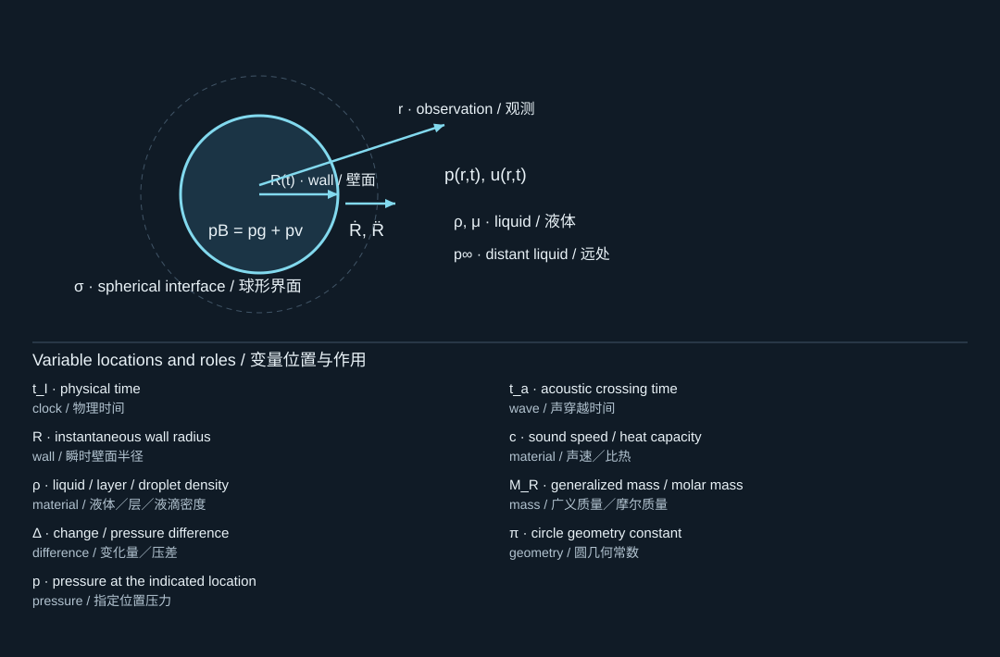
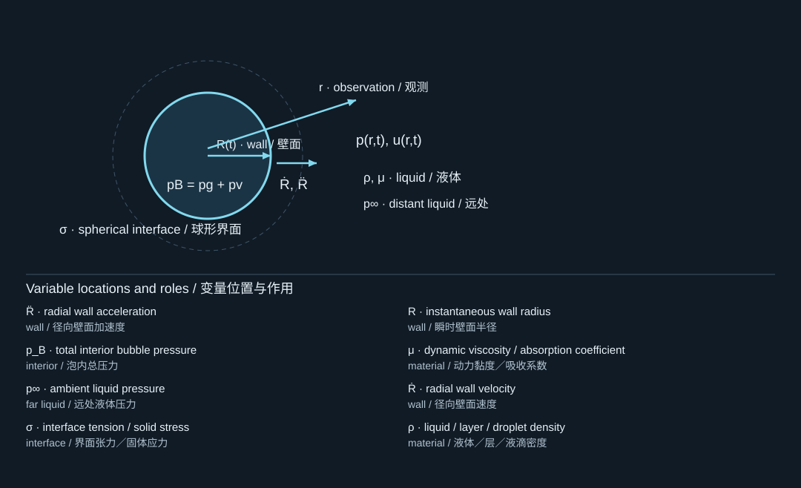

Completion credit carries forward from your earlier accepted answers. Covered work: growth and collapse, pressure balance, and surrounding-liquid inertia.
完成记录沿用此前已接受的作答。已涵盖内容：生长与塌缩、压力平衡及周围液体惯性。
Source: supplied generic textbook, Chapter 1. The complete bilingual chapter follows, with its derivations and qualifications. Textbook source (Markdown) · Original Markdown.
Bubble Cavitation Dynamics: From Fluid Mechanics to Laser-Driven Transfer is an original teaching text for Pengfei, an engineering-mechanics student who already understands continuum mechanics, fluid dynamics, differential equations, and elementary vibration theory. You do not need a previous course in bubble dynamics. You do need to be willing to distinguish a governing equation from the assumptions that make it solvable.
The organizing question is: How does a localized pressure or energy disturbance become bubble motion, liquid motion, and finally useful—or destructive—mechanical loading? A bubble is a moving interface coupled to liquid inertia, interfacial stress, gas thermodynamics, phase change, and sometimes a deformable solid. Learning only a radius equation would leave most of that question unanswered.
The supplied archive contains 35 papers, spanning 1949–2026 and 506 PDF pages, including cover sheets and accepted-manuscript pages. Their contributions fall into four overlapping groups: spherical-bubble mechanics; nucleation and laser energy conversion; jets and droplet vaporization; and compliant boundaries, printing, and detachment. The core mechanisms, selected equations, and relevant results were inspected directly. Other papers were inspected at abstract or overview level and are used as directed reading, not as evidence for unexamined quantitative claims. Appendix B records the role and reading depth of every paper.
Citations such as [S390] identify a paper by its folder number in your export, not by an invented bibliography order. [B1] is the independently verified companion textbook. Equations derived here and numerical examples created here are original teaching material; they are not digitized experimental data or claimed reproductions of a paper. The archive's original PDFs are not redistributed in this package.
On a first pass, read Chapters 1–7 in order, derive the Rayleigh–Plesset equation without looking at the answer, and run the numerical laboratory in Chapter 13. On a second pass, study Chapters 8–12 and connect each additional physical effect to an observable that the spherical model cannot predict. Chapter 15 then develops a staged research model for a liquid–PVC–film system. Chapter 16 supplies worked problems rather than merely a list of questions.
Keep three notebooks: a derivation notebook, a parameter-and-units ledger, and a model-discrepancy log. In the last one, write down what each model deliberately leaves out. A useful model is not the one containing the most physics; it is the simplest model whose missing physics does not invalidate the quantity you intend to predict.
This is a foundation-to-research textbook centered on single bubbles and bubble-driven transfer. Bubble clouds, sonochemistry, sonoluminescence, turbulent cavitating machinery, and fully developed multiphase acoustics are introduced only where needed. The numerical code solves spherical radial mechanics with specified closures. It does not simulate nucleation, resolve shocks, predict biological effects, or calculate film fracture. Laser and pressure experiments require suitable local safety controls; the calculations here do not establish safe operating conditions.
Imagine a spherical cavity of radius R(t) in an otherwise unbounded liquid. Its interior may contain noncondensable gas, vapor of the surrounding liquid, or both. The surrounding liquid carries most of the kinetic energy in many radial-motion problems. Consequently, the bubble is not best imagined as a little solid particle with a fixed mass. It is a deformable interface that continuously recruits liquid into motion. [S419, S413]
We use pB for total pressure immediately inside the bubble and pL for liquid pressure immediately outside its interface. The remote liquid pressure is p∞(t). Unless explicitly called a pressure difference, all pressures are absolute. A negative acoustic pressure usually means a negative deviation from a positive ambient pressure; it does not automatically mean negative absolute pressure.
For a static clean spherical interface with constant surface tensionσ, the Young–Laplace balance is
对于表面张力σ恒定、洁净且静止的球形界面，Young–Laplace平衡关系为
pB−p∞=R2σ.(1.1)

The diagram locates the physical system; its key lists the symbols in the formula. Read the definition in the surrounding derivation when a letter has different roles.
图示标出物理体系，图例列出公式中的符号。若某字母有多种作用，应以邻近推导中的定义为准。
This immediately explains why a microscopic gas bubble can have a substantially higher internal pressure than the surrounding water. The factor two comes from the two equal principal curvatures of a sphere. It is not the factor four for a soap bubble with two liquid–gas surfaces.
1.2 Cavitation, boiling, and vaporization are not synonyms
空化、沸腾和汽化并非同义词
Vaporization is a liquid-to-vapor phase change. Boiling usually emphasizes vapor production in a liquid made sufficiently hot relative to local pressure. Cavitation usually emphasizes cavity formation and evolution associated with a pressure reduction. Laser-induced optical breakdown can create a hot, pressurized cavity before its subsequent expansion and collapse are described by cavitation dynamics. These categories overlap physically, but the route by which the cavity is created determines the correct source model. [S390, S408, S409, S415]
A phase-changenanodroplet may vaporize into a bubble without immediately undergoing violent inertial collapse. A thermally formed bulge may detach a solid platelet without producing an ejected liquid microjet. Conversely, a stress wave may delaminate a film without a nearby bubble being the loading agent. Your sources contain examples of all three distinctions. [S387, S72, S340]
A complete calculation may require liquid momentum and mass conservation, interfacial traction balance, heat and species transport, and solid mechanics. These are coupled through the interface position. The moving boundary is part of the unknown, so specifying a pressure history alone is not generally enough to specify the whole problem.
Before deriving equations, state the intended output. For R(t) far from boundaries, a radial ordinary differential equation may suffice. For jet direction, interface shape must be resolved. For peak collapse pressure, compressibility and measurement bandwidth become central. For film release, interfacial fracture and structural inertia cannot be inferred from radius alone. [S339, S362, S409, S418]
Choose a characteristic radius R∗ and a positive inertial pressure difference Δp. Then define an inertial velocity and time. Compare these with acoustic propagation, capillary restoration, viscous diffusion, and thermal diffusion:
The diagram locates the physical system; its key lists the symbols in the formula. Read the definition in the surrounding derivation when a letter has different roles.
图示标出物理体系，图例列出公式中的符号。若某字母有多种作用，应以邻近推导中的定义为准。
tν=νR∗2,tα=αR∗2,ν=ρμ.(1.3)

The diagram locates the physical system; its key lists the symbols in the formula. Read the definition in the surrounding derivation when a letter has different roles.
图示标出物理体系，图例列出公式中的符号。若某字母有多种作用，应以邻近推导中的定义为准。
These are comparison scales, not five independent predictions of the bubble lifetime. In particular, tα based on the entire bubble radius may not represent heat transfer across a much thinner thermal boundary layer. Likewise, a long total lifetime does not prevent the last part of collapse from becoming acoustically fast.
Characteristic times for the teaching water parameter set. Each curve represents a scale, not a simulated bubble lifetime.
教学水参数下的特征时间。各曲线表示尺度，而非模拟得到的气泡寿命。
Checkpoint. Explain why a model can predict maximum radius accurately yet predict collapse pressure poorly. The answer should mention the different timescales and physical effects sampled by these two observables.
Use the declared parameter set in each part. The values are teaching scenarios unless specifically identified as inherited project inputs. Each reference panel follows its question.
使用每小题明确给出的参数。除明确标为沿用项目输入外，数值均为教学情景。各参考解答紧随题目。
A water bubble has R = 10 µm. Using the book values ρ = 998 kg/m³, σ = 0.072 N/m and Δp = 98,986 Pa, calculate capillary pressure and inertial speed. Is gas pressure dispensable merely because the bubble is small?
The diagram locates the physical system; its key lists the symbols in the formula. Read the definition in the surrounding derivation when a letter has different roles.
图示标出物理体系，图例列出公式中的符号。若某字母有多种作用，应以邻近推导中的定义为准。
The capillary pressure is 2(0.072)/(10×10⁻⁶) = 14,400 Pa. The speed scale is √(98,986/998) = 9.959 m/s. This is a scale, not a solved wall velocity. Gas can supply the restoring pressure and rebound cushion even for a small bubble.
Compute tI = R/U* and ta = R/c for c = 1482 m/s. Explain what the liquid contributes to a radial coordinate.
取 c = 1482 m/s，计算 tI = R/U* 和 ta = R/c，并解释液体对径向坐标的作用。
Reference answer / 参考答案
tI=Rρ/Δp,ta=R/c,MR=4πρR3

The diagram locates the physical system; its key lists the symbols in the formula. Read the definition in the surrounding derivation when a letter has different roles.
图示标出物理体系，图例列出公式中的符号。若某字母有多种作用，应以邻近推导中的定义为准。
tI = 1.004 µs and ta = 6.748 ns, so ta/tI = 0.00672. The surrounding liquid carries a radius-dependent generalized mass, 1.254×10⁻¹¹ kg here. R is an interface displacement; acceleration is not motion of a fixed gas mass alone.
The pressure driving becomes inward while the wall is moving outward. State the immediate velocity and acceleration signs and what must happen before collapse.
壁面仍向外运动时，压力驱动转为向内。说明瞬时速度与加速度符号，以及塌缩前必须发生什么。
Reference answer / 参考答案
R¨=[(pB−p∞−2σ/R−4μR˙/R)/ρ−23R˙2]/R

The diagram locates the physical system; its key lists the symbols in the formula. Read the definition in the surrounding derivation when a letter has different roles.
图示标出物理体系，图例列出公式中的符号。若某字母有多种作用，应以邻近推导中的定义为准。
For positive R and inward net pressure, Ṙ > 0, R̈ < 0: growth decelerates. The wall continues outward until Ṙ reaches zero; negative Ṙ then marks collapse. The instantaneous force does not erase liquid momentum.
R 为正、净压力向内时，Ṙ > 0、R̈ < 0，即膨胀减速。壁面继续向外，直到 Ṙ 降到零；之后 Ṙ 为负才进入塌缩。瞬时力不会消除液体动量。
Brief conceptual synthesis
简短概念综合
After using the reference panels, give a short explanation of the physical mechanism, the strongest assumption, and one observation that could falsify this chapter’s model. Preparation of later chapters does not require waiting for that reply.